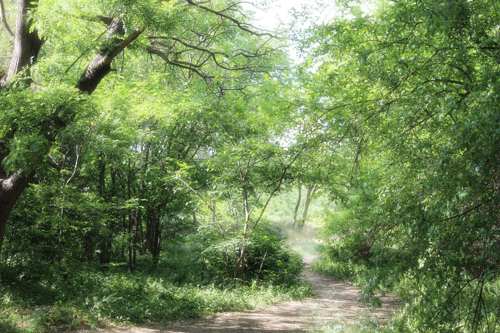

Обо мне
Эдем — начинающий фотограф
Меня зовут Эдем. Я начинающий фотограф, снимаю природу: леса, горы, воду, утренний туман и свет сквозь листву. Фотография для меня — это способ остановиться и посмотреть вокруг. Заметить то, мимо чего обычно проходишь.

Рассвет над озером. Одно из мест, куда я возвращаюсь.
Я снимаю с [год]. Начинал с прогулок по лесу рядом с домом, потом — поездки в горы, к озёрам, в новые места. Каждый кадр — это попытка сохранить мгновение, которое больше не повторится: свет меняется каждую минуту, и именно это делает природу бесконечно интересной.
Люблю естественный свет, спокойные тона и минимализм. В обработке стараюсь сохранить то, что увидел глазами, не перебарщивая с цветом и контрастом. Для меня важно, чтобы кадр дышал — не был «переслащённым».
Что снимаю
- Лес — туман, лучи сквозь кроны, тропы, мхи.
- Горы — хребты, облака, свет на склонах.
- Вода — реки, озёра, море. Отражения и длинные выдержки.
- Рассветы и закаты — самое «моё» время суток.
Чем могу быть полезен
Сейчас я в начале пути — и открыт к сотрудничеству, обмену опытом, совместным прогулкам и проектам. Если вам откликаются мои кадры — напишите, будем рады познакомиться.